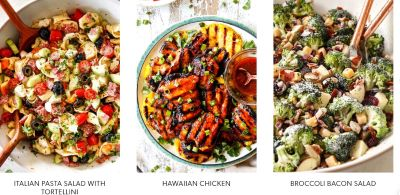

Recipe Foods
Ingredients
Look no further for a Salmon Avocado Saladand and other salads, Pizza Express Margherita, Pancakes, Mash, Chicken and more Recipe varieties..
Pancakes
100g Flour
2 Large Eggs
300ml Milk
1 Tbls Sunflower Oil
To Serve Sugar
To Serve Raspberries
To Serve Blueberries
French Onion Chicken with Roasted Carrots & Mashed Potatoes

2 Chicken Breasts
12 Ounces Carrots
5 Small Potatoes
1 Onion
1 Beef Stock
1 1/2 Cup Mozzarella
2 Tbsp Sour Cream
Salt
Peppar
Butter
Sugar
Vegatable Oil
Pizza
Instructions
1. Allow the mixture to stand for 10 – 15 minutes in a warm place (we find a windowsill on a sunny day works best) until
froth develops on the surface.
2. Make the dough: Sift the flour and salt into a large mixing bowl, make a well in the middle and pour in the
yeast mixture and olive oil.
3. Lightly flour your hands, and slowly mix the ingredients together until they bind.
4. Generously dust your surface with flour.
5. Throw down the dough and begin kneading for 10 minutes until smooth, silky and soft.
6. Place in a lightly oiled, non-stick baking tray (we use a round one, but any shape will do!)
7. Spread the passata on top making sure you go to the edge.
8. Evenly place the mozzarella (or other cheese) on top, season with the oregano and black pepper, then drizzle with a little olive oil.
9. Cook in the oven for 10 – 12 minutes until the cheese slightly colours.
10. When ready, place the basil leaf on top and tuck in!